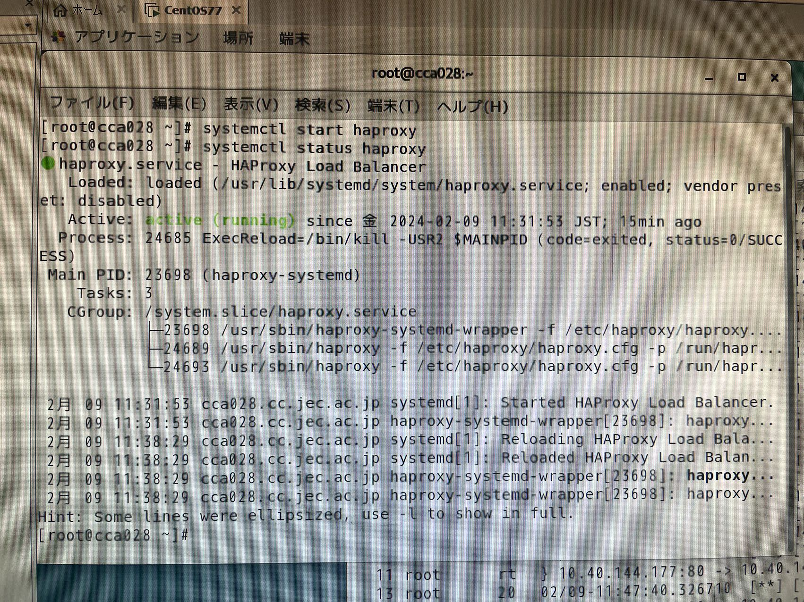
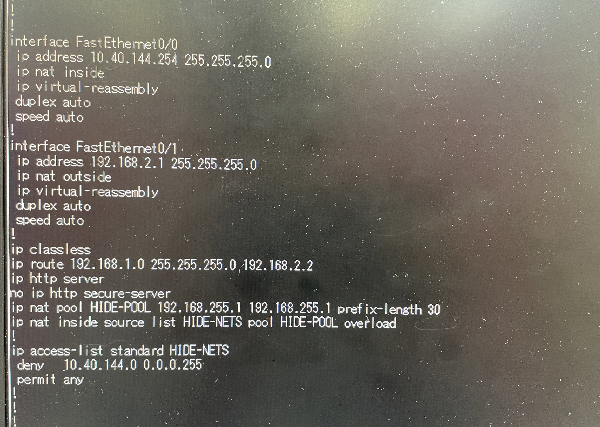
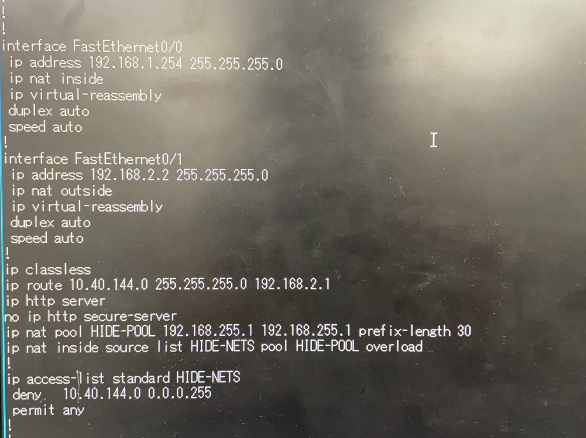
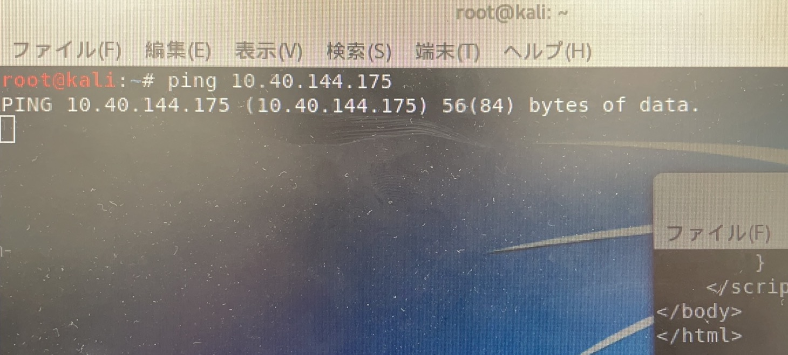
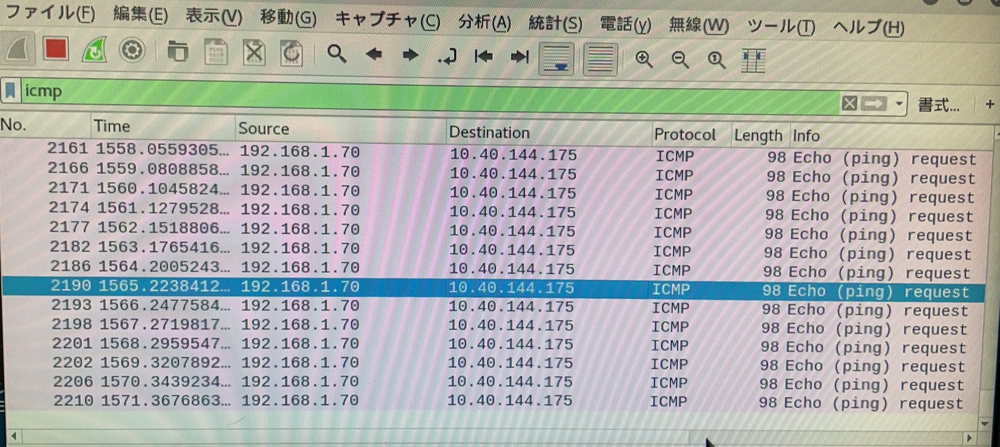
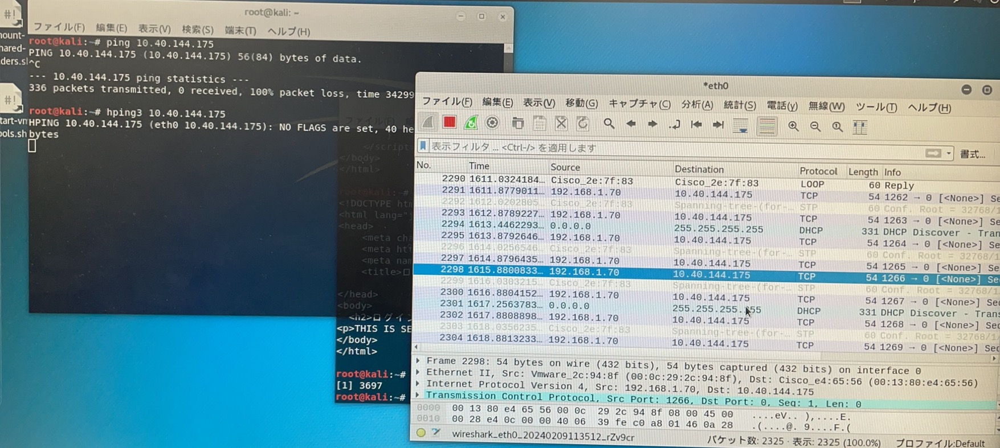
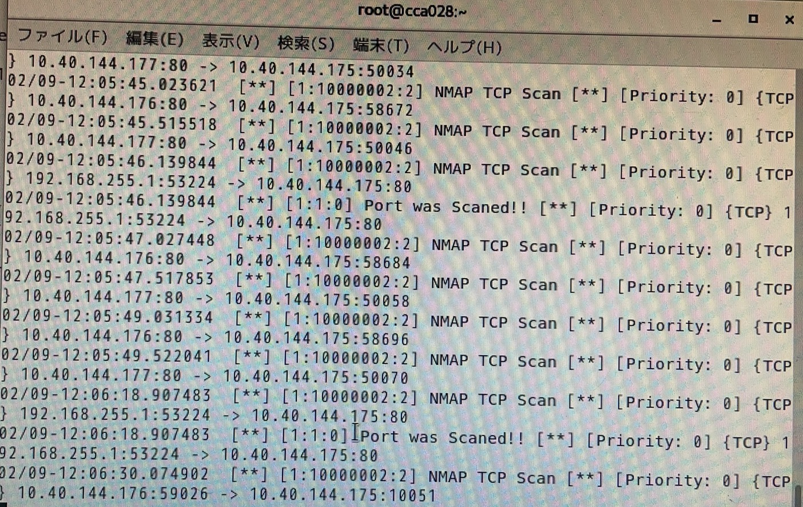

攻撃対策
server1ロードバランス起動と状態

攻撃対策
kaliからserver1のWEBへアクセス、Server２のWEBを見えるのはロードバランスの作用

攻撃対策
Wiresharkで kaliからserver1のWEBへアクセスデータを見える

攻撃対策
Serverの方のルータ NAT設定状態

攻撃対策
kaliの方のルータNAT設定状態

攻撃対策
NAT全部配置して、kaliからServer１へPINGすうると できないということ

攻撃対策
WiresharkでPINGデータをみえる

攻撃対策
対策の方法全部設定して、kaliからもう一回攻撃をすると HPING３ PINGできないということ Wiresharkでデータを参考する

攻撃対策
Server１にはkaliからSnort警告がなくなった

移動不可